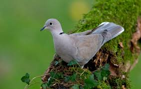
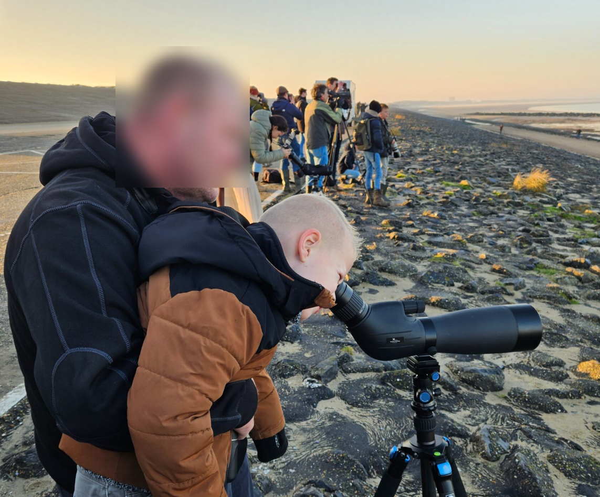

Vogels kijken: tips voor beginners!
Door: Dick van Braak
Laatste update: 25-8-2025
Inleiding
Waar ‘birdnerd’ ooit een scheldwoord was, is het inmiddels een geuzennaam. Vogels kijken is namelijk een ideale hobby en steeds meer mensen komen erachter. Daarom 8 tips voor de beginnende vogelaar.
Een blauworanje flits, in je ooghoek. Wat was dat?! Dat lijkt… dat lijkt wel een ijsvogel. Ja! Hij zit nu
daar!
Vogels kijken is spannend én ontspannend. Het kan samen (excursie, met vriend of vriendin), of juist
lekkerin je eentje, het is beter voor de gezondheid dan drinken op het terras en het kan óveral
(ook op het terras). Nu het ook nog hip is, heb je geen redenen om níet in de stilte van de natuur
te vogelen.
Wacht, storm nu niet zomaar naar buiten om in het wilde weg naar een vogel te kijken. Meer plezier heb je
namelijk met behulp van deze tips. Dan weet je ook nog vrij zeker dat je niet per ongeluk iets doet wat
vogels of andere natuur schaadt. En succes verzekerd!
Overzicht
- Bereid je (niet) voor
- Vogels kijken doe je overal
- Benut vogelkijkhutten
- Houdt afstand
- Laat nesten met rust
- Wees een goede gast
- Ga op excursie
- Verspreid de liefde en het respect voor de natuur
1. Bereid je (niet) voor
In principe is er geen voorbereiding nodig om vogels te kijken, helemaal niet als je met tuinvogels begint.
Maar in de praktijk is vogelen met een verrekijker wél tien keer zo leuk. Leen er anders eentje.
Verder is het fijn als je een app of vogelgids op zak heeft om vogels te herkennen. Sommige mensen willen
graag een logboekje bijhouden, vergeet dan je pen en papier niet. En natuurlijk eten en drinken voor
onderweg en afhankelijk van het seizoen jouw zonnebrandcrème en/of stevige schoenen.
2. Vogels kijken doe je overal
Als beginnende vogelkijker, denk je misschien dat je eerst op zoek moet naar wilde natuur om vogels tevinden. Dat is gelukkig niet zo. Vogels zijn aanpassers en als je eenmaal begint met kijken, zie je ze overal. Parken, kerkhoven, marktpleinen, grachten en zelfs daken zijn inmiddels leefgebied voor vogels. En natuurlijk jouw eigen achtertuin of straat waar langs de bomen boomkruipers kruipen en in de zomer gierzwaluwen gieren.
3. Benut vogelkijkhutten
Ben je op vakantie, een weekendje weg of op bezoek in een andere stad; ga dan eens naar een vogelkijkhut en laat je verrassen door de vogelsoorten die er komen. Vaak staan die hutten op strategische plaatsen, waar veel of mooiesoorten te zien zijn en heb je een goed zicht, zonder dat ze jou opmerken. Daardoor komen ze dichtbij en kun je rustig kijken.
4. Houdt afstand
Als je dichtbij vogels komt, denken ze dat je ze wilt opeten en vliegen ze weg. Dat kost ze tijd die ze nodig hebben om te paren, te broeden, voedsel te zoeken voor hun jongen of zich vet te eten voor ze wegtrekken naar warmere oorden. Verder kost het ze energie die ze zeker in de winterkou niet kunnen missen en als ze voedsel zochten, kost het zo ook nog een maaltijd. Ook al ben je helemaal niet van plan ze op te eten: de vogels weten dat niet, dus respecteer hun grenzen.
Kortom: praat niet te hard, zet je telefoon uit, laat je hond thuis en bovenal: komt niet te dichtbij. Als ze alert opkijken, alarmgeluiden maken of zelfs opvliegen, moet je meer afstand houden.
5. Laat nesten met rust
Laat vogelnesten altijd met rust. Kom er niet bij in de buurt, fotografeer ze niet, kijk er gewoon niet naar. Als je broedende vogels verstoort, bestaat de kans dat het hele legsel verloren gaat. De eieren of jongen worden al snel opgegeten door een roofdier als de ouders er niet zijn. Of de ouders worden zo bang dat ze niet meer terugkomen en dan verhongeren de jongen of komen de eieren nooit uit. Zie je per ongeluk een nest, loop dan rustig weg.
6. Wees een goede gast
Als je vogels kijkt, wees dan een goede gast en laat je vogelkijkplek achter zoals je hem vond. Gooi dus nooit afval in de natuur en vertrap geen planten of paddenstoelen. Sluit hekken achter u, blijf op paden als de terreinbeheerder dat vraagt (let op de borden) en betreed niet ongevraagd privéterreinen.
7. Ga op excursie
Hoor je dat deze duif niet roekoe zegt, maar roekoekoe? 
Tel maar, drie klanken, dat is dus een Turkse tortel.
Nergens leer je zoveel als van de ervaringen van andere vogelaars.
Ga dus eens mee op een excursie van Vogelbescherming en laat je verrassen door de kennis en het
enthousiasme van de excursieleiders. Dan weet je ook meteen zeker dat je vogels ziet. Van 11-19 mei
vindt de Nationale Vogelweek plaats en bieden we honderden - veelal gratis - vogelexcursies in het hele
land aan. Bekijk de excursies van de Nationale Vogelweek.
Kijk eens op de website van De Boomvalk. Een
actieve natuurvereniging waar je voor weinig mee kan op excursie.

8. Verspreid de liefde en het respect voor de natuur
Als je langs de weg staat met je verrekijker, vragen voorbijgangers soms geïnteresseerd wat je in hemelsnaam doet. Neem dan rustig de tijd om jouw meest interessante waarnemingen met hen te delen. Een buizerd die wordt aangevallen door kauwtjes of een zilverreiger in de wei: vaak gaat er een wereld voor ze open. Zo plant je een zaadje dat hopelijk uitgroeit tot liefde en respect voor de natuur. En de bereidheid haar te beschermen.